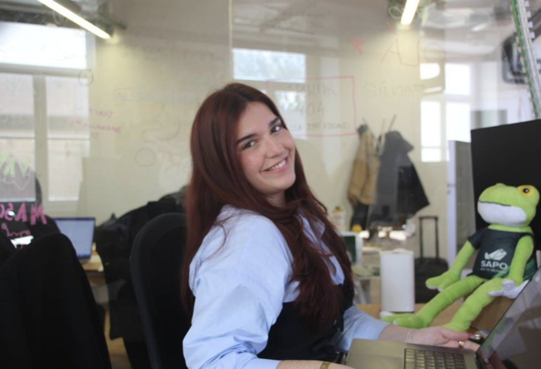
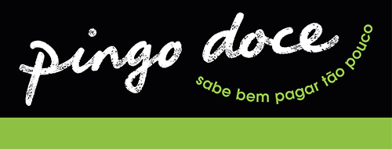
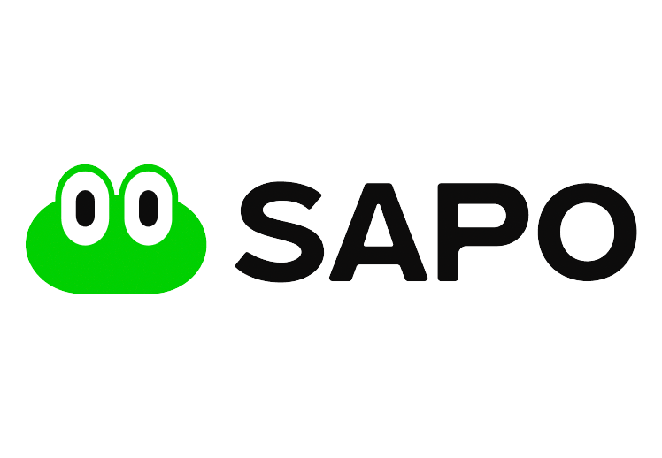

Rita Pinto builds systems that are as reliable behind the screen as they feel in front of it. Rita Pinto constrói sistemas tão fiáveis por trás do ecrã como parecem à frente dele.
3+ years shipping Android at production scale, plus an MSc dissertation building a full-stack AI system — from raw speech to structured data. Looking for a team that ships fast without breaking things. 3+ anos a lançar Android à escala de produção, e uma dissertação de mestrado a construir um sistema full-stack de IA — da fala em bruto a dados estruturados. À procura de uma equipa que lança rápido sem partir nada.

Three years, two production apps, one obsession with reliable delivery Três anos, duas apps em produção, uma obsessão por entregar sem falhas
At Bliss Applications, I worked across a major grocery-retail app used by millions and a greenfield product — turning legacy screens into modern Compose and shaping new ones from a blank canvas. Na Bliss Applications, trabalhei numa app de retalho alimentar usada por milhões e num produto greenfield — a transformar ecrãs legados em Compose moderno e a construir outros de raiz.

Migrated a production app to Jetpack ComposeMigrou uma app em produção para Jetpack Compose
Led the migration from legacy Activity-based architecture to Compose, scaling adoption from 15% to 95% across an app used by millions, with full feature parity throughout. Liderou a migração de arquitetura legada baseada em Activities para Compose e elevou a adoção de 15% para 95% numa app usada por milhões, com paridade total de funcionalidades.
- Rebuilt Maps, QR scanning and carousel components with full feature parityReconstruiu componentes de Maps, leitura de QR e carrosséis com paridade total
- Built the interactive "Play & Win" gamification screens end-to-endConstruiu de ponta a ponta os ecrãs de gamificação "Play & Win"
- Shipped inside tight agile cycles alongside design and productEntregou dentro de ciclos ágeis apertados junto com design e produto

Set the technical foundation for a new productDefiniu a base técnica de um novo produto
Built core screens from the ground up on a new mobile product, establishing the UI patterns and navigation architecture the rest of the team would build on. Construiu os ecrãs principais de raiz num novo produto mobile e estabeleceu os padrões de UI e a arquitetura de navegação usados pelo resto da equipa.
- Defined component conventions used across the early productDefiniu convenções de componentes usadas em todo o produto inicial
- Kotlin + Compose from day one of the buildKotlin + Compose desde o primeiro dia de construção
- Tight feedback loop with design during active product definitionCiclo de feedback rápido com design durante a definição ativa do produto
A full-stack AI system that turns conversations into structured dataUm sistema full-stack de IA que transforma conversas em dados estruturados
VoiceCRM is my MSc dissertation: an iOS app that listens to a sales conversation and hands back clean, structured CRM data — no manual entry required. VoiceCRM é a minha dissertação de mestrado: uma app iOS que ouve uma conversa de vendas e devolve dados de CRM limpos e estruturados — sem introdução manual.
Listening, transcribing, extractingOuvir, transcrever, extrair
The app records on-device, runs speaker diarization to separate who said what, transcribes European Portuguese speech, and sends the transcript to a FastAPI backend that extracts structured CRM JSON through an LLM. A app grava no dispositivo, corre diarização de oradores para separar quem disse o quê, transcreve fala em português europeu, e envia a transcrição para um backend FastAPI que extrai JSON de CRM estruturado através de um LLM.
- On-device speaker diarization via FluidAudio (pyannote-based)Diarização de oradores no dispositivo via FluidAudio (baseado em pyannote)
- European Portuguese transcription with SFSpeechRecognizerTranscrição de português europeu com SFSpeechRecognizer
- Structured extraction via Groq's Llama 4 Scout, served from a Python/FastAPI backendExtração estruturada via Llama 4 Scout (Groq), servida a partir de um backend Python/FastAPI
- Evaluated across 12 real conversation sessions using WER, DER, F1 and hallucination rate, over three Design Science Research iterationsAvaliado em 12 sessões de conversação reais com base em WER, DER, F1 e taxa de alucinação, ao longo de três iterações de Design Science Research
A React Native app that helps coma patients reconnectUma app React Native que ajuda doentes em coma a reconectar
BrainGain pairs personalised cognitive and physical rehabilitation with adaptive stimuli, coordinated through caregivers. BrainGain junta reabilitação cognitiva e física personalizada com estímulos adaptativos, coordenados através de cuidadores.
Technology for increasing consciousness in coma patientsTecnologia para aumentar a consciência em doentes em coma
Designed and prototyped a React Native app delivering personalised rehabilitation programmes, coordinating caregivers and adapting stimuli to each patient's responses. Originated from my BSc final project at UTAD. Concebeu e prototipou uma app React Native que entrega programas de reabilitação personalizados, a coordenar cuidadores e a adaptar estímulos às respostas de cada doente. Teve origem no projeto final da licenciatura na UTAD.
Two degrees worth of the rest of the stackDuas licenciaturas que cobrem o resto da stack
No job title attached to these yet — but my academic background goes well beyond mobile: backend systems, AI, databases, networks, and the practices that keep software honest under pressure. Ainda sem título profissional associado — mas a minha formação vai muito além do mobile: sistemas backend, IA, bases de dados, redes, e as práticas que mantêm o software fiável sob pressão.
Backend & ArchitectureBackend e Arquitetura
Layered and service-oriented design, the same thinking that shapes VoiceCRM's FastAPI backend.Design em camadas e orientado a serviços, o mesmo raciocínio que molda o backend FastAPI do VoiceCRM.
AI, NLP & LLMsIA, PLN e LLMs
Studied AI fundamentals academically, then applied them hands-on — prompt design, evaluation metrics, LLM integration.Estudou fundamentos de IA academicamente, depois aplicou-os na prática — prompt design, métricas de avaliação, integração de LLMs.
DatabasesBases de Dados
Schema design, query optimisation and data modelling — applied across every project above.Design de esquemas, otimização de queries e modelação de dados — aplicados em todos os projetos acima.
Distributed Systems & NetworksSistemas Distribuídos e Redes
Multicore & distributed systems, computer networks and operating systems.Sistemas multicore e distribuídos, redes de computadores e sistemas operativos.
Secure Software DevelopmentDesenvolvimento Seguro de Software
Threat modelling and secure coding practices — asking "how does this break" before shipping.Modelação de ameaças e boas práticas de segurança — perguntar "como é que isto parte" antes de lançar.
Software Quality & TestingQualidade de Software e Testes
Requirements engineering and software quality coursework, paired with unit testing on every shipped feature.Engenharia de requisitos e qualidade de software, aliadas a testes unitários em cada funcionalidade lançada.
Off the clock, still building somethingFora do horário, continua a construir algo
Where I've beenPor onde passei
Mobile Developer, Bliss ApplicationsMobile Developer, Bliss Applications
Android Developer Intern, Bliss ApplicationsEstagiária Android Developer, Bliss Applications
MSc Software Engineering, ISEPMestrado em Engenharia de Software, ISEP
BSc Computer Engineering, UTADLicenciatura em Engenharia Informática, UTAD
- Recently adopted a puppy, currently in the "everything is a chew toy" phaseAdotou recentemente um cachorro, atualmente na fase "tudo é uma brincadeira de mastigar"
- Designs and builds small web projects purely for the fun of itCria pequenos projetos web só pelo gosto de criar
- Always has a playlist running in the background while codingTem sempre uma playlist a tocar enquanto programa
- Direct communicator — says what she means, expects the same backComunicadora direta — diz o que pensa, espera o mesmo de volta
Adeus, Adeus — a goodbye, designed properlyAdeus, Adeus — uma despedida, bem desenhada
When three years at Bliss came to an end, instead of a plain message I built a small interactive site for it — a letter, photo memories, and a way for the team to leave their own message back.Quando três anos na Bliss chegaram ao fim, em vez de uma mensagem simples, construiu um pequeno site interativo — uma carta, memórias em fotos, e uma forma de a equipa deixar também a sua mensagem.